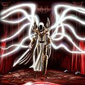
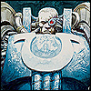

Forums galactiques > Assemblée Galactique : diplomatie officielle > [RP]Guerre contre Grimo Dongo
| Eolead Respect diplomatique : 116  30/08 ETU 12:17 | Score : 1 Détails Depuis quand le Prince du Désert a t'il fait place au Prince des Abysses ? Depuis quand la lueur du soleil des dunes est il plongé dans la pénombre ?
Quel revirement de mentalité ... Je vois avec consternation que le pouvoir que vous a délégué un feu-Commandant de renom vous est monté à la tête. | ||
| Valéria Kerridan Respect diplomatique : 53 30/08 ETU 12:27 | Score : 1 Détails Ce ne serait pas vraiment équitable. Le temps de pointer mon fusil et de tirer, vous serez au sol avant d'avoir rejoint le corps à corps... Bien sûr, on ne fait pas ça à mort. Je ne suis pas aussi stupide que l'autre, et j'ai bien envie de voir l'orage magnétique qui s'annonce.
| ||
| Ren56 Respect diplomatique : 92 30/08 ETU 14:15 | Score : 0 Détails Quelle conditions faut il avoir pour prendre par a ce combat ? Un boucher ? Grimo est loin d'en etre un a moins qu'il est tres fier du travail qu'il fait. Veut tu que je te decoupe en fines lamelles d'un coup de sabre ? Sinon je serais tenté de rejoindres votre combat enoyer moi un MP quand vous serez decicé.
| ||
| Sarah Respect diplomatique : 162 30/08 ETU 18:44 | Score : 2 Détails
Commandante, Commandants, Je crois que j'ai été d'une extrème patience ! Je vous rappelle aimablement que vous êtes venus assister à un duel en terrain neutre et que vous avez déposé les armes avant de venir. A moins de nous offrir le spectacle d'un combat à mains nues ou d'un combat de boue, je vous reconduis tous chez vous. Vous êtes comme des chiens attachés à la chaîne qui aboient sous les effluves du sang. Je vous en prie, les navettes attendent... Moi, j'ai un homme à enterrer dignement. | ||
| Colonel Schaffer Respect diplomatique : 10  02/09 ETU 12:50  | Score : 0 Détails Schaffer regarda le corps sans vie de son ami bjorn,
il avait si souvent parler ensemble à l'assembler le voir un si le rendait furieux, il méritait mieux que d'étre décapité dans un sanglant combat, il méritait tout simplement la victoire!! Je me leva et je partis vers la sorti de cette aréne au grand malheur!! |
Forums galactiques > Assemblée Galactique : diplomatie officielle > [RP]Guerre contre Grimo Dongo